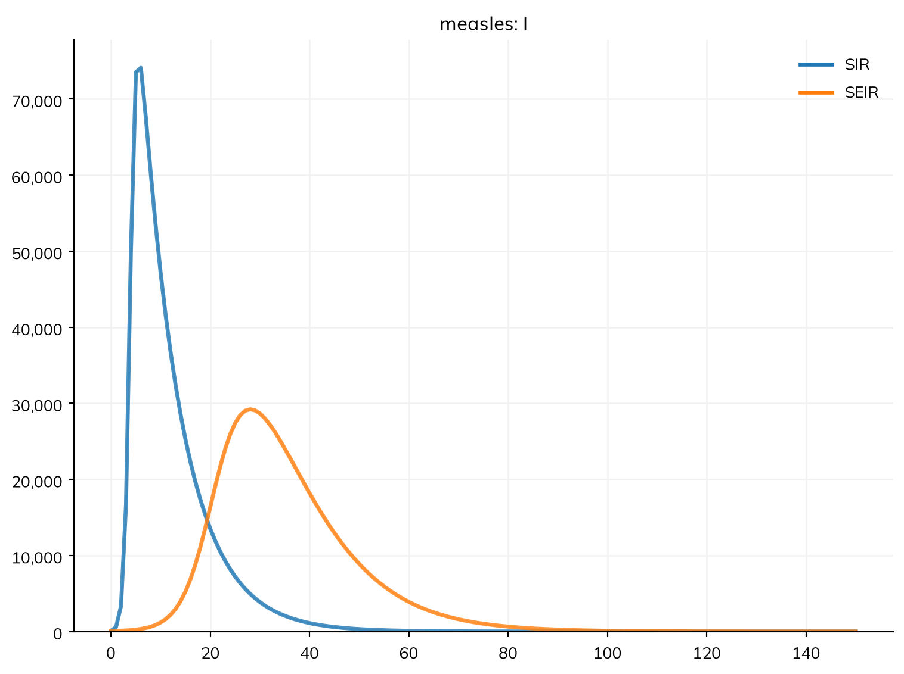
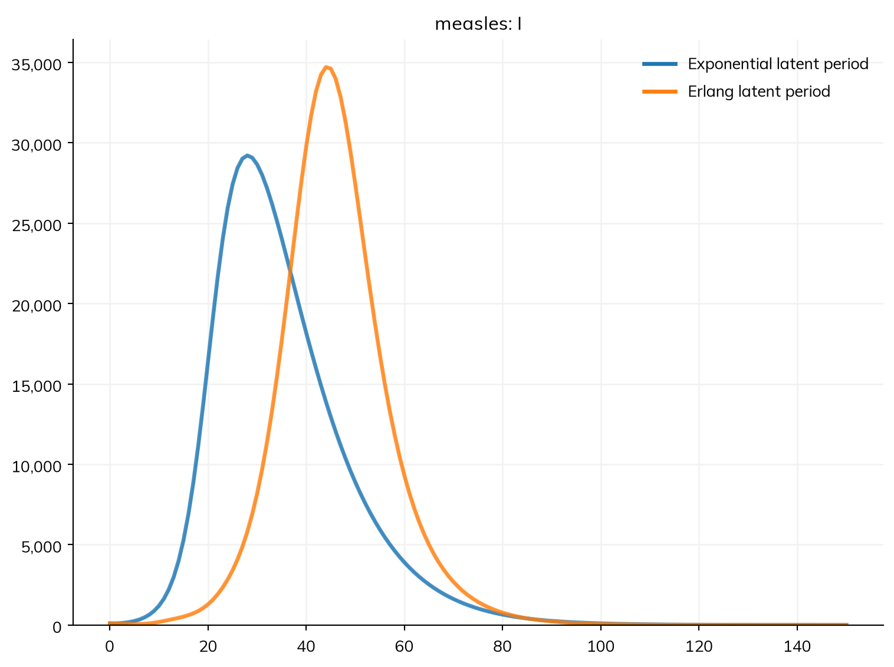
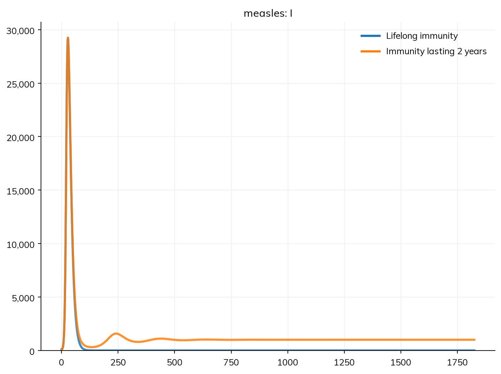
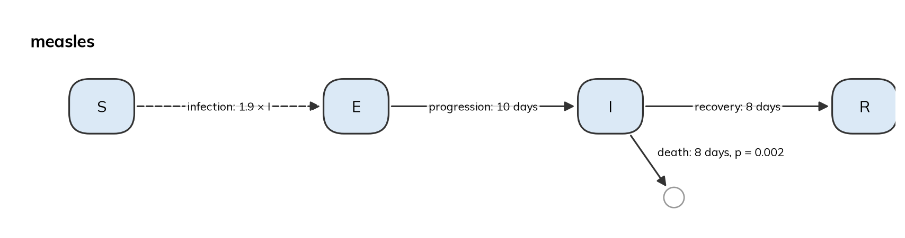
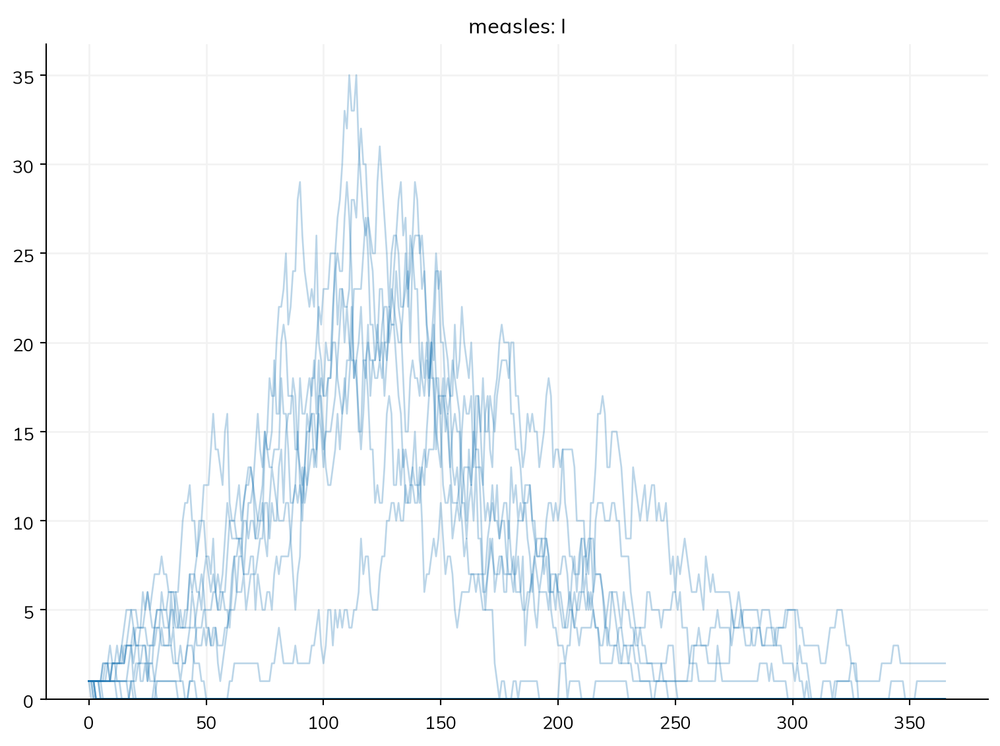
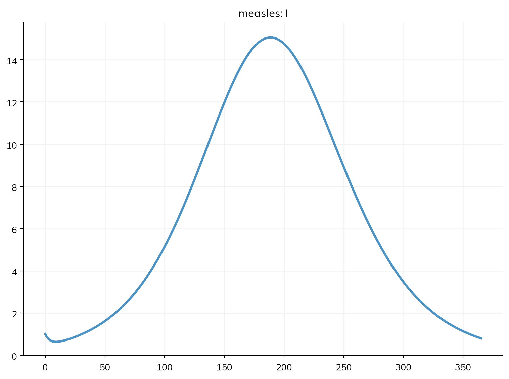
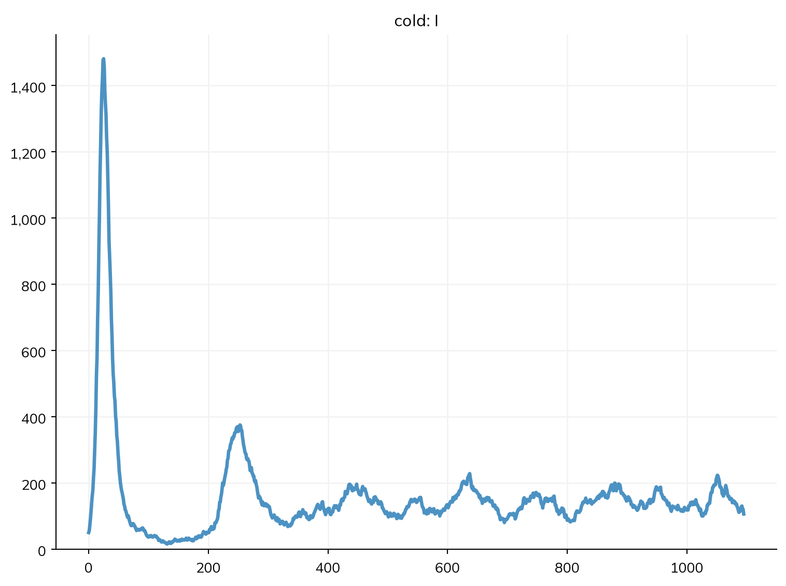
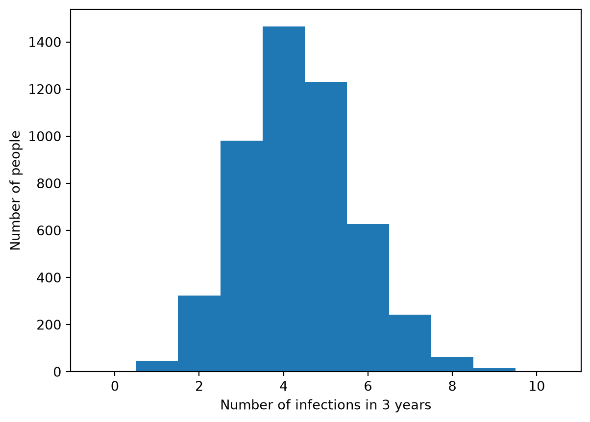

The SIR model of Tutorial 1 and Tutorial 2 is over within weeks, far faster than real measles. Tutorial 2 found that R0 and prior immunity decide how many people are infected. This tutorial asks: what decides how fast an outbreak spreads? It adds, one at a time, structure that most disease models need: a latent period, the distribution of a duration, waning immunity, and a branch (here, a small fraction die). It then names the parameters, checks the finished disease, and runs it as agents. By the end of this tutorial, you will be able to:
turn an SIR model into an SEIR model, and say why it changes the course of the epidemic but not R0;
choose the distribution of a duration, and add waning immunity and deaths;
name parameters, and check a disease from its description, equations, and diagram;
run a disease as agents, and see how chance and superspreading decide whether one case starts an outbreak.
A latent period
People infected with measles become infectious about 10 days later. In an SEIR model, people in this latent period are in their own compartment, E (exposed): infected, but not yet infectious. Infection moves people from S to E, and progression from E to I.
Here are the SIR and SEIR models, both named measles, so their results can be plotted together:
import starsim as ss# The SIR model of Tutorials 1 and 2S, I, R = ss.states('S I R')infection = S >> I @1.9*I # β = 1.9 per dayrecovery = I >> R @ ss.days(8) # Infectious for 8 days on averagesir = ss.Disease(infection, recovery, init=dict(I=0.001), name='measles')# The SEIR model: infection leads to E, not IS, E, I, R = ss.states('S E I R')infection = S >> E @1.9*I # Infected by contact with infectious people, Iprogression = E >> I @ ss.days(10) # Infectious after a latent period of 10 days on averagerecovery = I >> R @ ss.days(8) # Recovered after 8 days on averageseir = ss.Disease(infection, progression, recovery, init=dict(I=0.001), name='measles')sir_sim = ss.Sim(sir, total_pop=100_000, stop=ss.days(150))seir_sim = ss.Sim(seir, total_pop=100_000, stop=ss.days(150))msim = ss.parallel({'SIR': sir_sim, 'SEIR': seir_sim})msim.plot('measles.I')
MultiSim: 2 runs of 2 scenarios (SIR, SEIR)
Done in 0.28 s

Only I is infectious, since only it appears in the rate of infection. Both outbreaks start with 0.1% infectious (init=dict(I=0.001); init_prev=0.001 would put them in E, Tutorial 2).
R0 is the same in both, 15.2: it depends on how many people each infectious person infects (β = 1.9 a day, for 8 days), not on how soon they become infectious. But with a latent period, the time from one infection to the next (the generation time) is about 18 days instead of 8, so the epidemic peaks later and lower. So the first answer is the generation time: for the same R0, a longer one means a slower, flatter epidemic.
How long people stay in a state
A duration such as ss.days(10) is an average; by default, the time in the state is exponentially distributed, as in the standard ODE. That describes most latent periods poorly: with a mean of 10 days, 10% of people become infectious within a day. An Erlang distribution (a gamma with a whole-number shape, k) is the usual alternative in compartmental models. With k=10, the latent period still averages 10 days, with a standard deviation of about 3:
progression = E >> I @ ss.erlang(k=10, mean=ss.days(10)) # 10 days on average; 95% between 5 and 17seir_erlang = ss.Disease(infection, progression, recovery, init=dict(I=0.001), name='measles')erlang_sim = ss.Sim(seir_erlang, total_pop=100_000, stop=ss.days(150))msim = ss.parallel({'Exponential latent period': seir_sim, 'Erlang latent period': erlang_sim})msim.plot('measles.I')
MultiSim: 2 runs of 2 scenarios (Exponential latent period, Erlang latent period)
Done in 0.33 s

R0 is the same, but the epidemic peaks two weeks later, and higher. With an exponential latent period, the few who become infectious within a day or two start chains of infection early; with an Erlang one, almost nobody does. So the distribution of a duration, not just its average, sets how fast an epidemic grows.
As an ODE, Starsim runs an Erlang distribution as k exponential stages in a row, each 1/k of the mean, only a way to narrow the time in E. Written out, it is a transition with 10 stages:
As agents, each person draws their own time from the distribution instead. Other distributions, such as ss.lognormal(), are covered in Distributions.
Waning immunity
For many infections, such as pertussis or RSV, immunity wanes: a transition from R back to S, an SEIRS model. Suppose (unlike real measles) that immunity lasted 2 years on average:
progression = E >> I @ ss.days(10) # Back to an exponential latent periodwaning = R >> S @ ss.years(2) # Susceptible again after 2 years on averageseirs = ss.Disease(infection, progression, recovery, waning, init=dict(I=0.001), name='measles')lifelong = ss.Sim(seir, total_pop=100_000, stop=ss.years(5), unit='day')waning_sim = ss.Sim(seirs, total_pop=100_000, stop=ss.years(5), unit='day')msim = ss.parallel({'Lifelong immunity': lifelong, 'Immunity lasting 2 years': waning_sim})msim.plot('measles.I')
MultiSim: 2 runs of 2 scenarios (Lifelong immunity, Immunity lasting 2 years)
Done in 0.45 s

unit='day' says which unit the bare β = 1.9 is in (Tutorial 2). With waning immunity, smaller waves follow the first outbreak, and the disease becomes endemic. A supply of new susceptible people, from waning immunity or births (Tutorial 6), is what lets an infection persist, rather than burn through the population once and disappear.
Deaths: a branch
A small fraction of people with measles die: from 1 in 1,000 cases or fewer in high-income countries to several in 100 in some low-income settings. Suppose it is 2 in 1,000. People leaving I then branch: 0.2% die and the rest recover. A branch is a transition with p=, the fraction that take it, and p=None marks the one that takes the rest. After @, a dict gives the transition’s keywords:
S, E, I, R = ss.states('S E I R')infection = S >> E @1.9*Iprogression = E >> I @ ss.days(10)recovery = I >> R @dict(dur=ss.days(8), p=None) # The rest recover...death = I >> ss.dead @dict(dur=ss.days(8), p=0.002) # ...and 0.2% diemeasles = ss.Disease(infection, progression, recovery, death, init=dict(I=0.001))sim = ss.Sim(measles, total_pop=100_000, stop=ss.days(150))sim.run()print('Deaths:', round(sim.results.measles.death.sum()))
Sim: measles, 100,000 people, as an ODE, days 0 to 150
measles: R0 = 15.2, with 100 infectious at the start
Done in 0.0045 s; measles: 99,900 infections; at most 29,216 infectious, on day 28
Deaths: 200
library(starsim)states("S E I R")measles <-Disease(infection =Transition(S, E, rate =1.9* I),progression =Transition(E, I, dur =days(10)),recovery =Transition(I, R, dur =days(8), p =0.998), # 99.8% recover...death =Transition(I, ss$dead, dur =days(8), p =0.002), # ...and 0.2% dieinit =list(I =0.001))sim <-Sim(measles, total_pop =100000, stop =days(150))sim$run()cat("Deaths:", round(sum(sim$results$measles$death$values)), "\n")
S, E, I, R = ss.State(name='S'), ss.State(name='E'), ss.State(name='I'), ss.State(name='R')measles_explicit = ss.Disease(transitions= [ ss.Transition(source=S, dest=E, rate=ss.perday(1.9)*I, name='infection'), ss.Transition(source=E, dest=I, dur=ss.expon(mean=ss.days(10)), name='progression'), ss.Transition(source=I, dest=R, dur=ss.expon(mean=ss.days(8)), p=0.998, name='recovery'), # 99.8% recover... ss.Transition(source=I, dest=ss.dead, dur=ss.expon(mean=ss.days(8)), p=0.002, name='death'), # ...and 0.2% die ],init=dict(S=0.999, I=0.001), # The fraction of people in each state at the startname='measles',)sim_explicit = ss.Sim(diseases=measles_explicit, networks=ss.contacts(1), total_pop=100_000, start=ss.days(0), stop=ss.days(150), dt=ss.days(1), unit='day', solver='ode')sim_explicit.run()print('Deaths:', round(sim_explicit.results.measles.death.sum()))
Sim: measles, 100,000 people, as an ODE, days 0 to 150
measles: R0 = 15.2, with 100 infectious at the start
Done in 0.0031 s; measles: 99,900 infections; at most 29,216 infectious, on day 28
Deaths: 200
ss.dead is outside the model: people who die leave the population. Each branch has its own result (recovery and death), and could have its own duration. In the equations, who goes which way is decided on entering I, so I is in two parts, I_1 (who will die) and I_2 (who will recover):
measles.equations()
dS/dt = -beta * S * I / N
dE/dt = beta * S * I / N - E / dur_E
dI_1/dt = p_death * E / dur_E - I_1 / dur_death
dI_2/dt = (1 - p_death) * E / dur_E - I_2 / dur_recovery
dR/dt = I_2 / dur_recovery
The same outcome can be written as one transition with several destinations, outcome = I >> {ss.dead: 0.002, R: None} @ ss.days(8), decided as people leave I; its results are then outcome.dead and outcome.R (see Building diseases). Two transitions out of a state with rates and no p= are instead competing risks: whichever happens first moves each person. A branch gives the fraction directly, which is how the case fatality ratio is usually known.
Naming the parameters
Starsim names parameters itself (beta, dur_E, …), as Tutorial 2 showed. To name them yourself, use ss.par(). Each takes its name from its variable, and can have a description (doc=), a source (source=), and bounds, the range of plausible values:
S, E, I, R = ss.states('S E I R')beta = ss.par(1.9, bounds=[1, 3], doc='Transmission rate per day')dur_latent = ss.par(ss.days(10), bounds=[ss.days(7), ss.days(14)], doc='Average latent period', source='Assumed for this tutorial')dur_infectious = ss.par(ss.days(8), doc='Average infectious period')infection = S >> E @ beta*Iprogression = E >> I @ dur_latentrecovery = I >> R @dict(dur=dur_infectious, p=None)death = I >> ss.dead @dict(dur=dur_infectious, p=0.002)measles = ss.Disease(infection, progression, recovery, death, init=dict(I=0.001))sim = ss.Sim(measles, total_pop=100_000, stop=ss.days(150))
One parameter can be used in several places, as dur_infectious is, by both recovery and death: ss.Sim(measles, pars=dict(dur_infectious=ss.days(7)), ...) changes it in both. Calibration uses the bounds. See Parameters for more, including priors.
Checking the disease
Check that the disease is what you meant before using it. describe() lists every state, transition, and parameter as built, including every value Starsim chose itself:
sim.describe()
Sim 1 module, 100,000 people, days 0 to 150
solver
ode
guessed: every part of the model has a compartmental form
unit
day
from the typed values in the model
Disease 'measles' 4 states, 4 transitions
states
S, E, I, R
I infectious
init: I = 0.001; the rest in S
infection
S -> E transmission, from I
beta = 1.9 per day, between 1 and 3
Transmission rate per day
rate = 1.9 × I.n / N
homogeneous mixing
progression
E -> I spontaneous
time in E ~ exponential(mean = 10 days)
guessed: scalar duration
dur_latent = 10 days, between 7 and 14
Average latent period
source: Assumed for this tutorial
recovery
I -> R spontaneous
time in I ~ exponential(mean = 8 days)
guessed: scalar duration
p = 0.998
what the other branches leave
dur_infectious = 8 days
Average infectious period
death
I -> (removed) spontaneous
time in I ~ exponential(mean = 8 days)
guessed: scalar duration
p = 0.002
Mixing and interventions
mixing
homogeneous, 1 contact per day
guessed: no network given
Results and running
results
S, E, I, R, and one flow per transition; also infected, prevalence
plan
measles: as compiled code, the whole run in one call
schedule
every day: measles
Notes
note
unit='day' (from the typed values in the model)
Per step of measles 1 day
infection
beta = 1.9 per day → 1.9 per step
progression
rate 0.1 per day → p = 1 - exp(-0.1 × 1) = 0.0952 per step
recovery
rate 0.125 per day → p = 1 - exp(-0.125 × 1) = 0.1175 per step
death
rate 0.125 per day → p = 1 - exp(-0.125 × 1) = 0.1175 per step
equations() gives the ODEs, the quickest way to check that every flow leaves one state and enters another:
measles.equations()
dS/dt = -beta * S * I / N
dE/dt = beta * S * I / N - E / dur_latent
dI_1/dt = p_death * E / dur_latent - I_1 / dur_infectious
dI_2/dt = (1 - p_death) * E / dur_latent - I_2 / dur_infectious
dR/dt = I_2 / dur_infectious
diagram() draws a flowchart (diagram('text') gives it as Mermaid):
measles.diagram()

A disease can also be written as a class, with its states, parameters, and transitions in the class body, so that it can be made with other parameter values, like the diseases in Starsim’s library (e.g. Measles(beta=1.5)); see Diseases.
Advanced: diseases as agents
Everything above also runs as agents (with n_agents=, as in Tutorial 1). Each person then has their own state, their own durations (measles.E.stays gives each person’s time in E), and, if you want, their own infectiousness and susceptibility. This shows two things the deterministic ODE can’t: chance when cases are few (which a stochastic compartmental solver can also show), and differences between people.
Chance, and the first case
In a deterministic ODE, an infection with a reproduction number above 1 always takes off. In reality, the first cases may recover before infecting anyone. Suppose 90% of the town is immune and one infectious person arrives. R0 is still 15, but the effective reproduction number at the start is R ≈ 1.9 × 8 × 0.1 ≈ 1.5: each case infects about 1.5 others. Here are 20 runs as agents, each with its own random seed, and the ODE for comparison:
import numpy as npimport matplotlib.pyplot as pltS, E, I, R = ss.states('S E I R')infection = S >> E @1.9*Iprogression = E >> I @ ss.days(10)recovery = I >> R @ ss.days(8)measles = ss.Disease(infection, progression, recovery, init=dict(R=0.9), init_n=dict(I=1)) # 90% immune, and 1 casepars =dict(n_agents=5000, stop=ss.days(365), verbose=0)msim = ss.parallel(ss.Sim(measles, **pars), n_runs=20)msim.plot('measles.I', lines=True)ode = ss.Sim(measles, total_pop=5000, stop=ss.days(365), solver='ode', verbose=0)ode.run()ode.plot('measles.I')


The ODE always gives the same outbreak. As agents, some runs give one about as large, and the rest die out after a handful of cases. Counting runs with fewer than 20 infections:
total = msim.results.measles.infection.values.sum(axis=1) # Total infections in each runprint('Fraction of introductions that die out:', np.mean(total <20))
Fraction of introductions that die out: 0.65
Theory says one case dies out with a chance of 1/R, here about 2 in 3, close to the runs. This holds early in an outbreak in a large, well-mixed population, where each case’s infections are independent and the infectious period is exponentially distributed, as here. This matters for questions about introductions: how likely an imported case is to start an outbreak.
People who differ: superspreading
For many diseases, most cases infect few others or none, and a few infect many (superspreading). This is usually described by giving each person an infectiousness drawn from a gamma distribution with mean 1 and dispersion k: the smaller k, the more concentrated transmission is. A value that each person has is an attribute, ss.attr(), here drawn once for each person; ss.modify() then multiplies each person’s infectiousness (rel_trans) by it:
defmake_sim(k=None):""" The measles model, with the infectiousness of each person drawn from a gamma distribution with shape k """ S, E, I, R = ss.states('S E I R') infection = S >> E @1.9*I progression = E >> I @ ss.days(10) recovery = I >> R @ ss.days(8)if k isNone: # Everyone equally infectious measles = ss.Disease(infection, progression, recovery, init=dict(R=0.9), init_n=dict(I=1))return ss.Sim(measles, **pars) infectiousness = ss.attr(ss.gamma(shape=k, scale=1/k)) # A mean of 1, and a shape (dispersion) of k measles = ss.Disease(infection, progression, recovery, infectiousness=infectiousness, init=dict(R=0.9), init_n=dict(I=1)) superspreading = ss.modify(measles.rel_trans, multiply=infectiousness)return ss.Sim(measles, connectors=superspreading, **pars)for label, k in {'Everyone equally infectious': None, 'k = 1': 1, 'k = 0.2': 0.2}.items(): msim = ss.parallel(make_sim(k), n_runs=40) total = msim.results.measles.infection.values.sum(axis=1)print(label, '- fraction that die out:', np.mean(total <20), '- median size of the outbreaks that take off:', np.median(total[total >=20]))
Everyone equally infectious - fraction that die out: 0.675 - median size of the outbreaks that take off: 313.0
k = 1 - fraction that die out: 0.65 - median size of the outbreaks that take off: 298.5
k = 0.2 - fraction that die out: 0.75 - median size of the outbreaks that take off: 182.5
Each case infects about 1.5 others on average in all three, but the more concentrated transmission is, the more often an introduction dies out: with k = 0.2, about 3 in 4 do, since the first case is most likely one who infects nobody. ss.attr() can also draw a value when something happens to a person (e.g. a severity at infection, with when=infection); see Diseases. Susceptibility can differ in the same way, with ss.modify(measles.rel_sus, ...).
Counting each person’s infections
With waning immunity, people can be infected again and again. Measles immunity is lifelong, so this example switches to a cold-like respiratory infection: an SIRS model (R0 = 0.4 × 7 = 2.8) with immunity lasting 6 months on average. keep_times=True keeps each person’s history, which only agents have:
S, I, R = ss.states('S I R')infection = S >> I @0.4*I # β = 0.4 per dayrecovery = I >> R @ ss.days(7) # Infectious for 7 days on averagewaning = R >> S @ ss.days(180) # Immune for 6 months on averagecold = ss.Disease(infection, recovery, waning, init_prev=0.01, name='cold')sirs = ss.Sim(cold, n_agents=5000, stop=ss.days(3*365), keep_times=True, verbose=0)sirs.run()sirs.plot('cold.I')

After a first wave, the infection settles into smaller, repeated waves. cold.infection.n_times is the number of times each person has been infected:
counts = sirs.diseases.cold.infection.n_times.valuesplt.figure()plt.hist(counts, bins=np.arange(counts.max() +2) -0.5)plt.xlabel('Number of infections in 3 years')plt.ylabel('Number of people');

Most people are infected 3 to 5 times. A model can use a person’s history: e.g. ss.modify(cold.rel_sus, multiply=0.5, who=cold.infection.n_times >= 2) would halve the susceptibility of people infected at least twice. A disease can also be written as Python code, as in Starsim 3: T8 – Custom modules shows how.
Exercises
Measles has a latent period of 10 to 12 days. Using the model with named parameters, run it with a latent period of 12 days, using pars=. Does R0 change? How do the timing and height of the peak change?
Give the infectious period an Erlang distribution too, with k=4. Using R0() and a plot of I, check whether R0 or the course of the epidemic changes.
About 1 in 10 people with measles in this town are admitted to hospital, after 4 days of being infectious on average, and stay for 7 days. Add a state for people in hospital (assume they don’t transmit), and find the largest number of people in hospital at once.
Try different durations of immunity in the SIRS model of the respiratory infection (e.g. 1, 6, and 24 months). How do they affect the epidemic curve, and the number of times people are infected?
In the town with 90% immune, increase the fraction susceptible to 20% (init=dict(R=0.8)), so that each case infects about 3 others. What fraction of introductions die out now, with and without superspreading (k = 0.2)?